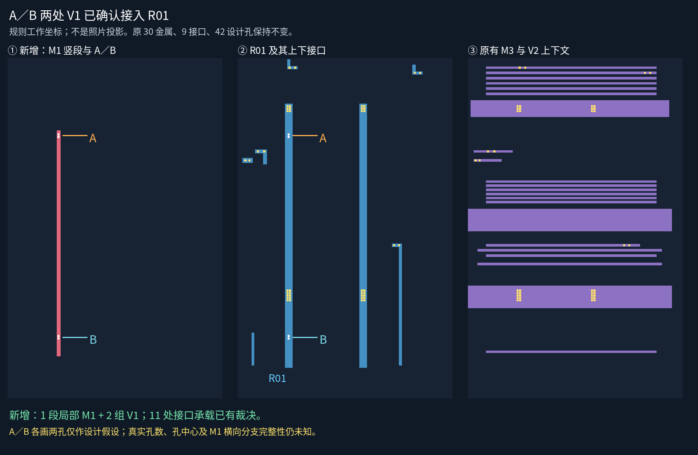
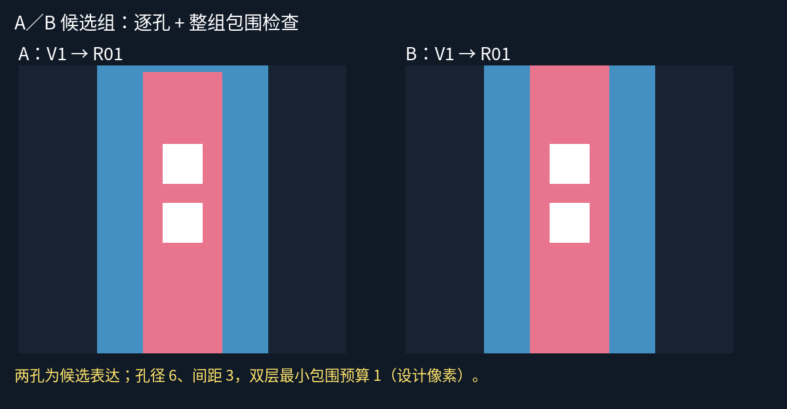

A／B：均有 V1，并接入 R01
已保存原话“都有”，逐项绑定原始问题、M1 原图搜索框及 R01。原生来源批准与新增规则几何分开。
进入五层切换工作页 · 原问题与宽幅原图 · 状态记录

检查结果
- 保留：原 30 条金属、9 条已审接口、42 个候选孔及中心精确不变。
- 新增：1 段局部 M1 竖段、A／B 两组 V1；两处身份与承载已经确认。
- 设计检查：新组共 4 个候选孔，逐孔及整组包围、孔间距、层次来源检查通过。
- 两孔/组只是规则设计假设；真实孔数、精确原生落点、M1 横向分支完整性仍未知。没有采用宏观变换投影。

下一步
沿 A 的右侧、B 的左侧核对 M1 连续横向分支，逐段补来源清单和几何；发现其它接口后再单独核查。不重复审批 A／B 身份与承载，不把当前竖段称为全部 M1。
本页 PNG 已目视检查；切换页仅做静态资源与脚本检查，浏览器交互未实测。